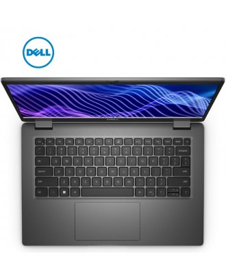

HAWK STORE

Dell Latitude 3440 ( I7 1355U / 8GB /SSD 512GB PCIE / 14"FHD )
Brand: DELL
Product Code: Latitude 3440
$799.00
Add to cart
DESCRIPTION
FREE: Carry Bag, Mouse Wireless, Mouse Pad.
-CPU: 13th Gen Intel® i7-1355U Processor (Cores10,Threads12, 12M Cache, up to 5.00 GHz )
-RAM: 8GB DDR4
-Storage: SSD 512GB M2 PCIe
-Optical Drive: N/A
-Graphic : Intel® UHD Graphics
-Display : 14"FHD (1920×1080) Non-Touch
-Wi-Fi + Bluetooth
Ports
1 USB 3.2 Gen 2 Type-C®
2 USB 3.2 Gen 1 port
1 USB 3.2 Gen 1 port
1 HDMI 1.4 port
1 universal audio port
1 power-adapter port
1 RJ-45 Ethernet port
-Battery: 3-Cell, 41Whr
-Weight: 1.54kg
-OS: DOS
-Color: Black
Warranty
- 1-year hardware
- 6month for screen, keyboard & battery